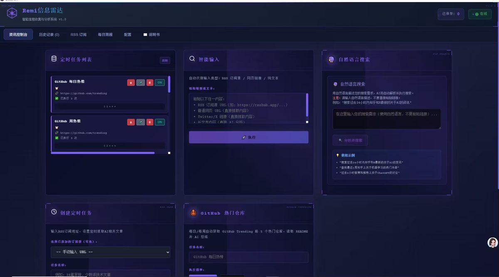
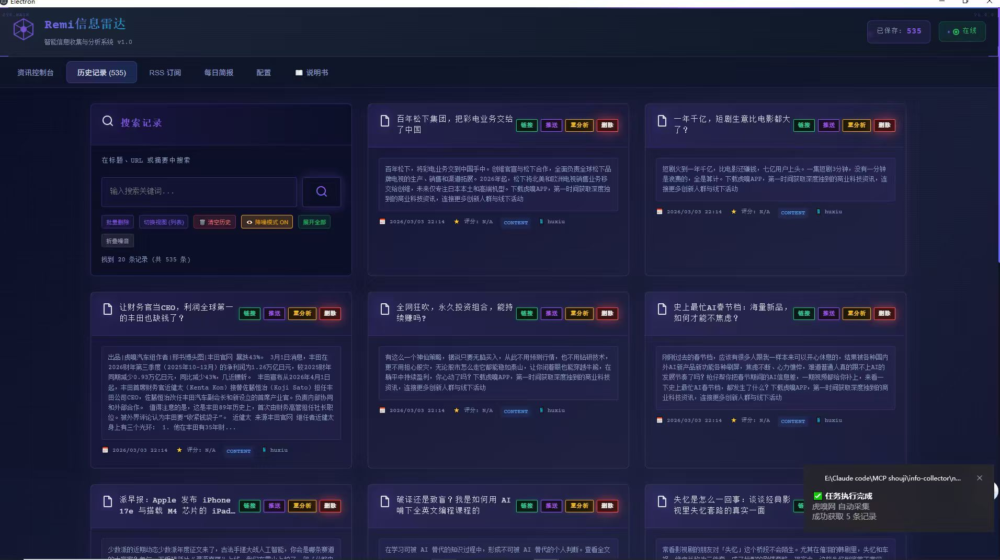
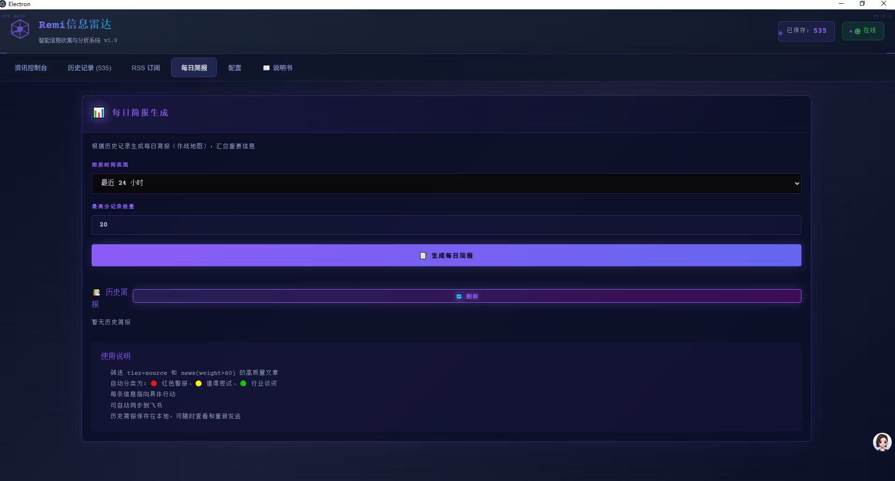
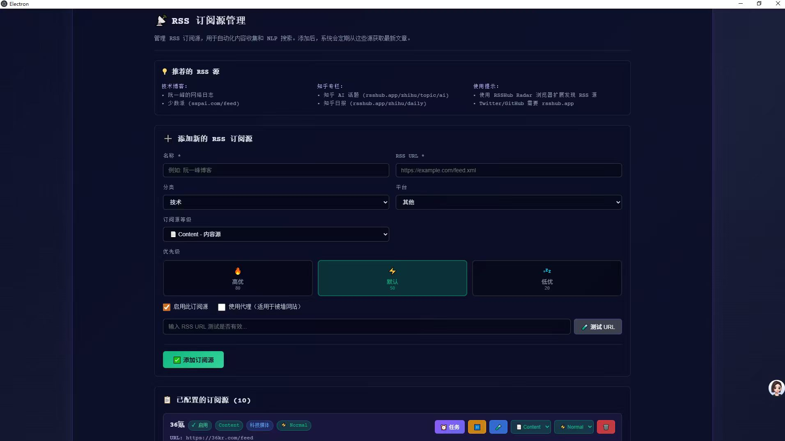

Electron 桌面应用，集成 RSS、AI 分析、多平台爬虫的智能信息采集系统




Remi Radar（原名 MCP shouji）是一款智能信息采集工具，专为需要高效获取和整理技术资讯的用户设计。 它集成了 RSS 订阅管理、多平台爬虫、AI 内容分析、语义搜索和定时任务调度等功能， 帮助用户从海量信息中快速提取有价值的内容。
支持添加/管理多个 RSS 订阅源，内置国内优质 RSS 源（虎嗅、36 氪、少数派、IT 之家等）
集成 DeepSeek AI，0-10 分智能评分，自动提取关键词标签，生成文章摘要
基于 Embedding 向量的智能语义搜索，支持自然语言查询
灵活的 cron 表达式调度，支持每日/每周任务，自动获取资讯
支持知乎热榜、Twitter/X、微博热搜、GitHub Trending 等平台
多维表格记录同步，每日简报推送，Webhook 消息推送
┌─────────────────────────────────────────┐
│ Electron 桌面应用 │
│ (info-collector) │
│ ┌─────────────────────────────────┐ │
│ │ React + TypeScript │ │
│ │ 渲染进程 UI │ │
│ └─────────────┬───────────────────┘ │
│ │ IPC │
│ ┌─────────────▼───────────────────┐ │
│ │ Electron 主进程 │ │
│ │ - 定时任务调度 │ │
│ │ - AI 内容处理 │ │
│ │ - 爬虫模块 │ │
│ │ - 数据存储 │ │
│ └─────────────────────────────────┘ │
└──────────────────┬──────────────────────┘
│
┌──────────────────▼──────────────────────┐
│ 外部服务 │
│ ┌─────────────┐ ┌────────────────┐ │
│ │ RSSHub │ │ AI 服务 │ │
│ │ (RSS 生成) │ │ (DeepSeek) │ │
│ └─────────────┘ └────────────────┘ │
│ ┌─────────────┐ ┌────────────────┐ │
│ │ 飞书多维表格│ │ 目标平台 │ │
│ │ (数据存储) │ │ (知乎/X 等) │ │
│ └─────────────┘ └────────────────┘ │
└─────────────────────────────────────────┘
集成 DeepSeek AI 和 OpenAI，提供 0-10 分智能评分系统，自动提取关键词标签，生成文章摘要。
生成摘要、标签、评分（基础分析）
批判性观点分析
生成可执行的行动清单
提取核心知识点（干货模式）
灵活的 cron 表达式调度，支持每日/每周/一次性任务。
基于 Embedding 向量的智能语义搜索，支持自然语言查询。
搜索"关于 Agent 开发的文章"
搜索"AI 视频生成技术"
支持多个主流平台的内容抓取。
已采集记录
定时任务
RSS 订阅源
AI 处理率